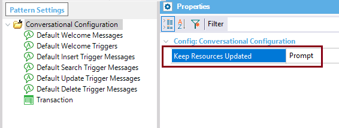

Select True if you want GeneXus to automatically update the Conversational Flows resources. If this value is False GeneXus will prompt you before updating the Conversational Flows resources. Values
Scope Objects: Conversational Flows Pattern Description
The CommonChatbots module contains the Chatbot generator pattern resources. In the Build process, and in the Generate bot action, it is checked whether the resources have any change compared to the version of the resources that you have in the KB. These objects are updated through an import. The resources of the KB can be overwritten depending on the Keep Resources Updated property, which is available at the Conversational Flows pattern settings.  If set to TRUE, they are always overwritten with their new version. On the other hand, if set to FALSE, the resources are never updated. In this case, you can miss a fix that may be available, so it's advisable to read the release notes in order to be aware of any possible changes. If the property is set to Prompt, you are asked if you want to update the resources every time that it's necessary to do it. See Chatbot Generator resources update. AvailabilityThis property is available since GeneXus 15 upgrade 12. |
| Backlinks | |||
| Chatbot generator | |||
| Chatbot Generator resources update | Toc:Chatbots in GeneXus | Conversational Flows pattern settings | Force Chatbot Generation menu option |